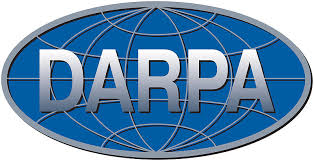

Um pouco Sobre a História da internet
O Surgimento da Internet
Depois da Segunda Guerra, EUA e URSS começaram a ter seus desentendimentos,dando origem à Guerra Fria em 1949. Neste contexto, em que os dois blocos ideológicos e politicamente antagônicos exerciam enorme controle e influência no mundo, qualquer mecanismo, qualquer inovação, qualquer ferramenta nova poderia contribuir nessa disputa liderada pela União Soviética e pelos Estados Unidos: as duas superpotências compreendiam a eficácia e a necessidade absoluta dos meio de comunicação.

Nessa perspectiva, o governo dos Estados Unidos temia um ataque russo às basesmilitares. Um ataque poderia trazer a público informações sigilosas, tornando os EUA vulneráveis.
Então foi idealizado um modelodetroca ecompartilhamento de informações que permitisse a descentralização das mesmas. Assim, se o Pentágono fosse atingido, as informações armazenadas ali não estariam perdidas. Era preciso, portanto, criar uma rede, a ARPANET, criada pela DARPA, sigla para Defence Advanced Research Projects Agency.
O começo de tudo
A ARPANET funcionava através de um sistema conhecido como chaveamento de pacotes, que é um sistema de transmissão de dados em rede de computadores no qual as informações são divididas em pequenos pacotes, que por sua vez contém:
- trecho dos dados
- o endereço do destinatário
- informações que permitiam a remontagem da mensagem original.
Em 29 de Outubro de 1969 ocorreu a transmissão do que pode ser considerado o primeiro E-mail da história. O texto desse primeiro e-mail seria "LOGIN", conforme desejava o Professor Leonard Kleinrock da Universidade da Califórnia em Los Angeles (UCLA), mas o computador no Stanford Research Institute, que recebia a mensagem, parou de funcionar após receber a letra “O”

A ARPANET no início, em 1969, só tinha 4 pontos
Tensão diminui
Já na década de 1970, a tensão entre URSS e EUA diminui. As duas potências entram definitivamente naquilo em que a história se encarregou de chamar de Coexistência Pacífica. Não havendo mais a iminência de um ataque imediato, o governo dos EUA permitiu que pesquisadores que desenvolvessem, nas suas respectivas universidades,estudos na área de defesa pudessem também entrar na ARPANET.Com isso, a ARPANET começou a ter dificuldades em administrar todo este sistema,devido ao grande e crescente número de localidades universitárias contidas nela.Dividiu-se então este sistema em dois grupos, a MILNET, que possuía as localidadesmilitares e a nova ARPANET, que possuía as localidades não militares. O desenvolvimento da rede, nesse ambiente mais livre, pôde então acontecer. Não só os pesquisadores como também os alunos e os amigos dos alunos, tiveram acesso aos estudos já empreendidos e somaram esforços para aperfeiçoá-los.
Já na década de 70, depois da abertura da rede para pesquisadores
Além desses backbones, existem os criados por empresas particulares. A elas são conectadas redes menores, de forma mais ou menos anárquica. É basicamente isto que consiste a Internet, que não tem um dono específico.
Arpanet nescecitava crescer
Com a entrada de muitos pontos na rede e com métodos decomunicação diferentes entre eles, alguma atitude tinha que ser tomada, já que o antigo protocolo NCP já não estava mais aguentando. Robert Kahn da DARPA e ARPANET recrutaram Vint Cerf da Universidade de Stanford para trabalhar com ele nesse problema. Em 1973, eles logo trabalharam com uma reformulação fundamental, onde as diferenças entre os protocolos de rede eram escondidas pelo uso de um protocolo inter-redes comum, e, ao invés da rede ser a responsável pela confiabilidade, como no ARPANET, os hospedeiros ficaram como responsáveis.
A especificação do protocolo resultante contém o primeiro uso atestado do termo internet, como abreviação de internetworking; então a palavra começou como um adjetivo, ao invés do nome que é hoje. Com o papel da rede reduzida ao mínimo,ficou possível a junção de praticamente todas as redes, não importando suas características, assim, resolvendo o problema inicial de Kahn. O DARPA concordou em financiar o projeto de desenvolvimento do software, e depois de alguns anos de trabalho, a primeira demonstração de algo sobre gateway entre a rede de Packet Radio na Baía de SF área e a ARPANET foi conduzida. Decorrentes das primeiras especificações do TCP em 1974, TCP/IP emergiu em meados do final de 1978, em forma quase definitiva. Em 1º de janeiro de 1983, data conhecida como Flag Day, o protocolo TCP/IP se tornou o único protocolo aprovado pela ARPANET, substituindo o antigo protocolo NCP

O cientista Tim Berners-Lee (foto ao lado),do CERN, criou a World Wide Web, a linguagem HTML e o protocolo HTTP em 1992. Essa linguagem simples, mas eficiente,era usada para a criação dos sites com o conceito de hipertexto (documentos ligados entre si).
A empresa norte-americana Netscape criou o protocolo HTTPS (HyperText Transfer Protocol Secure), possibilitando o envio de dados criptografados para transações comercias pela internet.